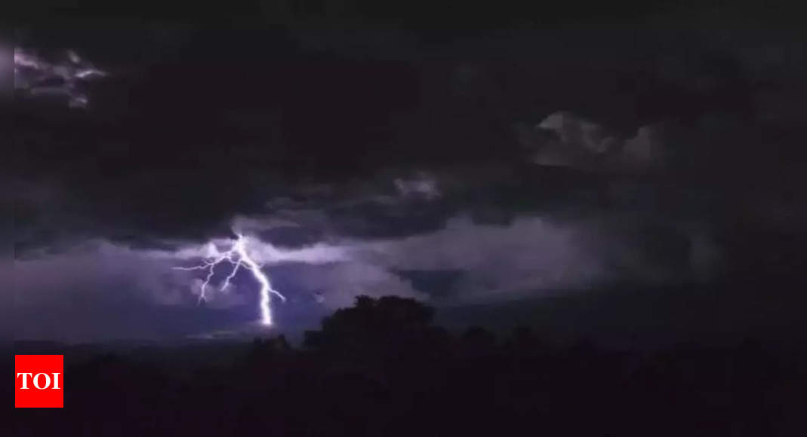

The Tragic Tale of the Pakistan Rains: Lightning Strikes Kill 10
Image Credits https://m.timesofindia.com/world/pakistan/lightning-strikes-kill-10-as-pre-monsoon-rains-lash-pakistans-eastern-punjab-province/articleshow/101272366.cms
On a fateful day in the eastern province of Punjab, Pakistan, pre-monsoon rains wreaked havoc in the region, causing widespread damage and fatalities. While the rains were much-needed in the area to alleviate the scorching heat that had been persisting for weeks, what followed was a nightmare that left 10 people dead due to lightning strikes.
The Pakistan Meteorological Department had issued warnings about thunderstorms and gusty winds in the region, but little could be done to prevent the loss of life and property that ensued. The lightning strikes caused power outages, disrupted traffic, and damaged buildings, leaving residents in a state of shock and despair.

The Perils of Lightning Strikes
Lightning strikes are a natural phenomenon that occur when there is an imbalance of electrical charges in the atmosphere. They can be both beautiful and deadly, with the power to destroy lives and property in an instant.
According to the National Weather Service, an average of 49 people are killed and 300 are injured each year in the United States due to lightning strikes. The numbers are even higher in other parts of the world, particularly in developing countries where safety measures are often lacking.
Case Studies
Case Study 1: India
In June 2021, a series of lightning strikes in the northern Indian state of Uttar Pradesh killed over 40 people. The victims were mostly farmers who were working in their fields when the lightning struck. The incident highlighted the need for better lightning warning systems and safety measures for vulnerable populations, particularly those who work outdoors.
Case Study 2: Mozambique
In 2019, Mozambique was hit by two major cyclones – Idai and Kenneth – that caused widespread devastation and loss of life. One of the lesser-known impacts of the cyclones was the increased risk of lightning strikes in the affected areas. The destruction of trees and other natural features had left the population more exposed to lightning strikes, leading to an increase in fatalities.
Conclusion
The tragedy of the Pakistan rains is a stark reminder of the perils of natural disasters, particularly in developing countries where safety measures are often lacking. To prevent such incidents from happening again, there is a need for better warning systems, infrastructure, and public education about the dangers of lightning strikes.
- Investment in lightning warning systems and infrastructure
- Education about lightning safety measures for vulnerable populations
- Research on the impact of climate change on lightning activity
Curated by Team Akash.Mittal.Blog
Share on Twitter Share on LinkedIn